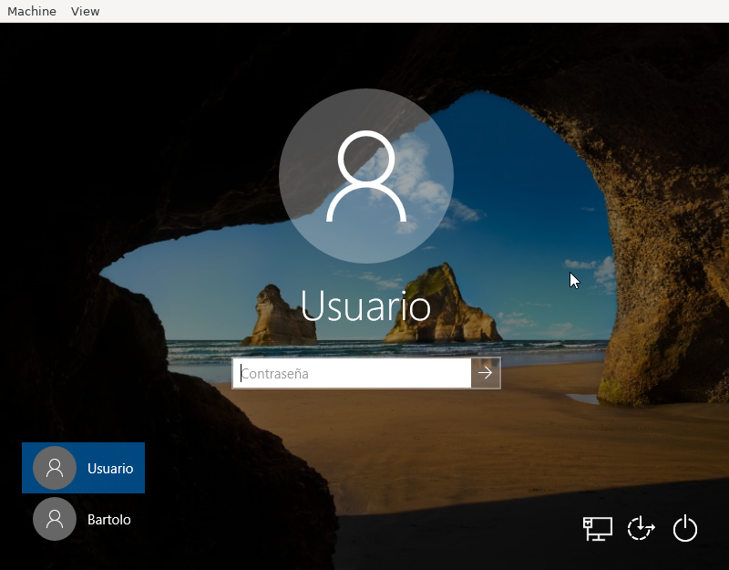

Ejercicios sobre configuración de Windows 10¶
Una pantalla de acceso a Windows 10, muestra este aspecto:
Se pide:
Identificar las distintas partes que componen la plantlla.
Para cada una de ellas:
Explicar para qué sirve.
Incluir una captura si al pinchar sobre ella se muestra información adicional.
Deducir cuál es el estado de nuestro propio sistema según la información que recibamos.
Lleve a cabo las siguientes operaciones, haciendo una captura o varias capturas que confirmen que es capaz de hacerlas:
Salga de la sesión.
Apague el equipo (pero no desde la pantalla de acceso).
Utilice «Cortana» para abrir la Configuración del Sistema.
Acceda a la aplicación de «Administrador del Equipo».
Acceda a la sección de «Herramientas administrativas».
Acceda a la sección de «Administrador de tareas».
Acceda a la configuración del escritorio para:
Sustituya la imagen de fondo por un color sólido.
Indique dónde puede cambiar la resolución de pantalla.
Deshabilitar el apagado de temporización.
Modifique el menú de Inicio para que aparezcan las aplicaciones más usadas en vez de las más recientemente agregadas.
En los iconos de escritorio:
Elimina el de «Papelera».
Añada el de «Red».
Realice las siguientes operaciones:
Llegue al directorio personal del usuario partiendo del disco C:.
Llegue al directorio donde se guardan las aplicaciones al ser instaladas, partiendo de C:.
Cree un directorio llamado «MisCosas» en D: y dentro de él dos subdirectorios llamados «Documentos» y «Descargas».
Modifique las ubicaciones de «Documentos» y «Descargas» para que sean los directorios anteriormente creados.
Haga que se muestren siempre las extensiones de los archivos, incluso aunque sean de tipos conocidos.
Compruebe que al crear un fichero con el Block de notas y guardarlo en «Documentos», se almacena en D:, no en C:.
Compruebe que al descargar una imagen de Internet se almacena en D:.
Indicar cuál es la ocupación de C: y D:
Lleve a cabo las siguientes acciones:
Busque en internet la aplicación «Visual Studio Code» (¡ojo!, no «Visual Studio») e instálela en el sistema.
Asocie los archivos de extensión RST para que se abran con esta aplicación.
Cree un fichero vacío con esta extensión y compruebe que se abre automáticamente con la ella.
Desinstálela.
Acceda a la configuración de red y consulte cuál es. Actívela y desactívela.
Consulte la información de su sistema (procesador, memoria, versión del sistema operativo, etc.)
Compruebe que su sistema dispone de cortafuegos y de que éste está activo (Windows Defender).
Configure el sistema para que:
Se apague de lunes a viernes a las 15:00 y a las 23:00 de la noche.
Al iniciar la sesión del usuario, se abra automáticamente el explorador de archivos.